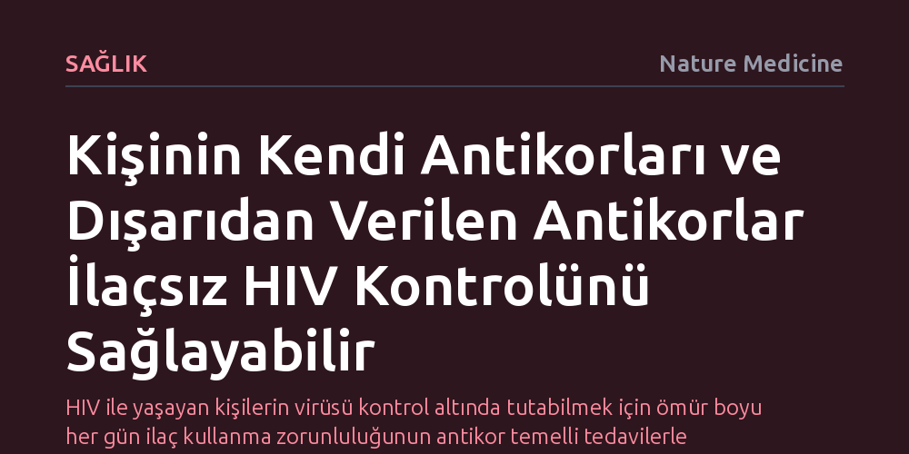

SAGLIK · Nature Medicine · 2026-10-14
Klinik deney verilerinin analizi, antiretroviral tedavi kesildiğinde hem hastanın kendi antikorlarının hem de dışarıdan verilen antikorların virüsün yeniden nüksetmesini geciktirdiğini ortaya koyuyor. Bu bulgu, HIV enfeksiyonunun ömür boyu günlük ilaçlara bağımlı kalmadan kontrol altında tutulabileceği yeni tedavi yaklaşımlarının önünü açıyor.
HIV ile yaşayan kişilerin virüsü kontrol altında tutabilmek için ömür boyu her gün ilaç kullanma zorunluluğunun antikor temelli tedavilerle aşılabileceğini gösteriyor.

HIV tedavisinde standart yöntem olan antiretroviral tedavi (ART), kandaki virüs yükünü tespit edilemeyen seviyelere düşürerek hastaların sağlıklı bir yaşam sürmesini sağlıyor. Ancak mevcut ilaçlar virüsü vücuttan tamamen temizleyemiyor; virüs hücresel rezervuarlarda saklanıyor ve tedavi kesildiği anda hızla yeniden çoğalmaya başlıyor. Bu biyolojik engel, hastaların yaşamları boyunca her gün aksatmadan ilaç kullanmasını zorunlu kılıyor.
Nature Medicine'da yayımlanan yeni bir ikincil klinik analiz, bu zorunluluğun aşılabileceğine dair umut verici kanıtlar sunuyor. Araştırmacılar, tedaviye ara verilen dönemde hem hastanın kendi bağışıklık sistemi tarafından üretilen antikorların hem de dışarıdan infüzyonla verilen geniş nötralizan antikorların virüsün geri dönüşünü belirgin biçimde ertelediğini gösterdi.
HIV araştırmalarında son yıllarda öne çıkan en önemli stratejilerden biri, virüsün farklı suşlarını etkisiz hale getirebilen geniş nötralizan antikorların (bNAb) laboratuvarda üretilerek hastaya verilmesidir. Ancak bu pasif bağışıklık yöntemi tek başına uygulandığında virüsün mutasyon geçirerek antikorlardan kaçmasını her zaman engelleyemiyordu. İncelenen yeni klinik veriler, dışarıdan aktarılan antikorların tek başına değil, hastanın kendi ürettiği otolog antikorlarla birlikte çalıştığında gerçek bir direnç oluşturduğunu ortaya koyuyor.
Antiretroviral ilaçlar kesildiğinde gizlendiği rezervuarlardan çıkan virüs parçacıkları, iki yönlü bir antikor kuşatmasıyla karşılaşıyor. Bir yandan hastanın kendi bağışıklık hafızası önceki enfeksiyon deneyimiyle virüsü hedeflerken, diğer yandan dışarıdan infüze edilen antikorlar virüsün yeni hücrelere tutunmasını engelliyor. Bu eşzamanlı savunma mekanizması, viral nüksetmeyi geciktirerek bağışıklık sistemine virüsü kontrol altında tutması için kritik bir zaman kazandırıyor.
Bu bulgu, HIV alanında 'fonksiyonel kür' ya da kalıcı remisyon olarak adlandırılan hedefe giden yolda kritik bir kilometre taşı niteliği taşıyor. Günlük hap kullanımına dayalı rejimlerin yerini, belirli aralıklarla uygulanacak antikor infüzyonlarının veya vücudun kendi güçlü antikorlarını üretmesini tetikleyecek aşı benzeri stratejilerin alabileceği bir tedavi modelinin mümkün olduğunu kanıtlıyor.
Bununla birlikte, yöntemin standart bir tedaviye dönüşebilmesi için aşılması gereken önemli klinik engeller bulunuyor. Her hastanın bağışıklık yapısının ve ürettiği antikor profilinin farklı olması, tedavinin herkes için aynı derecede etkili olmasını zorlaştırabilir. Ayrıca virüsün zaman içinde her iki antikor türüne de direnç geliştirmesini önleyecek en ideal antikor kombinasyonlarının belirlenmesi için daha geniş kapsamlı klinik çalışmalara ihtiyaç duyuluyor.